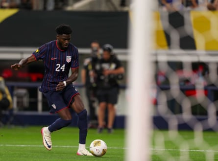

F or as much as the Gold Cup gets denigrated, it’s a much tougher tournament than it might appear. The ongoing tournament is the 11th edition in the last two decades, and this year’s US are just the 10th team to make it through three group matches unscathed (Panama became the 11th on Tuesday).
US manager Mauricio Pochettino has to be pleased with his team’s performance. After rough showings in the pre-tournament friendly matches, a 5-0 win over Trinidad and Tobago was cathartic, while a 1-0 win over Saudi Arabia and a 2-1 victory against Haiti also showed that the US are trying to make winning a habit as their manager has asked.
If Pochettino took lessons from those exhibitions and applied them to the tournament, it stands to reason that he’ll take the learnings from the group stage and put them toward what the US hopes will be three knockout contests.
Here are four things we learned from the USMNT in the group stage:
There is life without Christian Pulisic
The days ahead of the tournament began were filled with worry about the fact that Christian Pulisic would not be part of the competition, opting for summer rest rather than trying to win what would be his first career Gold Cup title (a decision that caused no shortage of drama and discourse ).
There is no doubt the US would be a better team with Pulisic, and when he wants to come back into the team, he’ll likely go straight back into the XI barring a real showdown with manager Mauricio Pochettino. But in the group stage, the US has shown that it has players in the pool who can provide an attacking spark.
Malik Tillman is most notable among them, scoring three goals in the group stage including a pair against Trinidad and Tobago and the opener against Haiti. Consistently dangerous and also hard-working, Tillman has been the breakout star of the tournament, putting the form he has often displayed with PSV on the field with the national team.
“What a player, no? What a player that is showing in this camp his talent and (ability),” Pochettino said.
Indeed. It’s not just Tillman, a Bayern Munich product who reportedly is drawing interest for a Bundesliga return, who is bolstering the US. Diego Luna continues to inject energy and try to create chances when he’s on the field, and Quinn Sullivan certainly isn’t afraid to try a few things – notably going for a rabona against Haiti but also putting a number of shots on target and linking up well with Tillman and the other attackers when he’s on the field.
Competition is alive and well
While Zack Steffen and Patrick Schulte had to pull out with injuries, Pochettino’s top two goalkeepers remained in camp and look to be in open competition for the starting spot going forward. Or maybe the newer of those faces, NYCFC shot-stopper Matt Freese, is ahead for now.
Freese started the first friendly of the summer against Turkey, while previous US No 1 Matt Turner played the friendly match against Switzerland that saw the Americans concede four goals in the first half.
While it seems the competition is somewhat cut-throat, Pochettino laughed off the idea that Freese conceding on an error against Haiti would lead to some sort of conversation between the manager and the goalkeeper.
“Remember, the most important action is the next one. If you’re thinking about the last one, you’re dead. You’re going to make another mistake,” Pochettino said. “This type of accident happens and it’ll happen in the future, but we’re so happy with him and the quality of our keepers, of course, the way they’re supporting each other.”
For his part, Freese said he immediately put the error out of his mind and focused on not allowing another goal. “You have to move on very quickly, so, thankfully, the guys we all support each other in the bad moments and in the good moments,” he said.
We’ll see where the coaching staff’s thoughts are when the starting lineup comes out against Costa Rica, a team with no goalkeeping battle thanks to anchor Keylor Navas.
Patrick Agyemang has started up top for the US, scoring twice in the group stage.Photograph: Brian McLean/ZUMA Press Wire/Shutterstock
Injury returns are needed
The US came into the summer hoping they would enjoy the returns of right back Sergiño Dest, left back Antonee Robinson and striker Folarin Balogun. Instead, all three are missing the tournament because of injuries.
Though striker Patrick Agyemang has scored twice in the group stage, the balance of his play has yet to convince that he’s polished enough at this point in his career to be a consistent option up top. The US needs Balogun and Ricardo Pepi fit and ready to go at the 2026 World Cup. Otherwise, the may find themselves in a situation like 2022, with no great goal-scoring options in a knockout game.
A similar dynamic exists among the wide defenders. While Alex Freeman has been a pleasant surprise as a serviceable option at right back, both of Robinson’s replacements – Max Arften and John Tolkin – have had a few adventures, and it’s clear Robinson is the best American left back by a wide margin.
The US could still win this thing
While the US has looked great through three group games, their chief Concacaf rivals haven’t.
Mexico managed just a draw with Costa Rica, and while they still have far more of their key contributors than the US does, they’ve struggled to score from open play, even struggling a bit against the Dominican Republic in the opener. Their Gold Cup has seen them relying on set pieces and a defense that is stingy with center back Johan Vázquez back and partnering César Montes once again, allowing Edson Álvarez to break things up in midfield. Canada struggled, and eventually drew, with Curaçao.
The US will have no such margin for error now. It wouldn’t be out of the question for a team with as much experience and talent as Costa Rica to relish being a stumbling block on the US’s road to redemption after the last-place Nations League Final Four finish and the miserable friendlies. A great day from Navas (and perhaps a goal from Alonso Martínez) are both within the realm of possibility.
It was a strong start, but the finish will matter much more, not just for this Gold Cup, but for momentum heading into the big show next year.